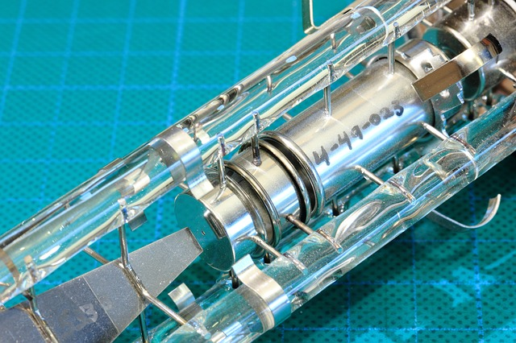
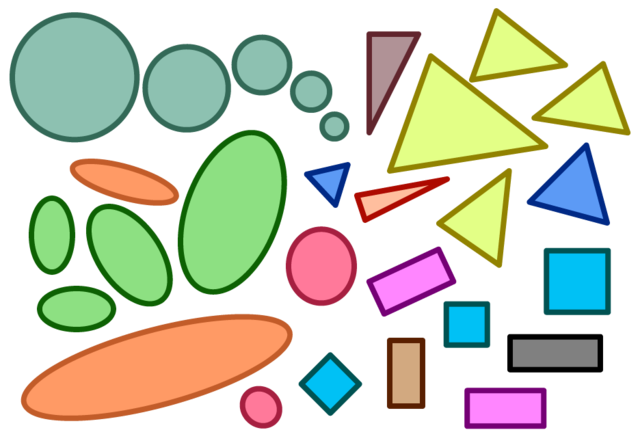

The original Mac typefaces. Credit: Susan Kare 1983.
The original Mac typefaces. Credit: Susan Kare 1983.
 Pong, one of the earliest arcade video games was also one of the first software applications to use graphics.
Pong, one of the earliest arcade video games was also one of the first software applications to use graphics.
It's easy to forget that computers didn't always have screens. The original format for computer output was actually printed, not rendered, and as with even modern printers, printing was slow. It wasn't until Ivan Sutherland integrated a CRT screen with a computer in Sketchpad that screens enabled interactive, immediate feedback experiences.
But display hardware alone were not enough to support the visual interfaces we used today. There was an entire set of new concepts that needed to be invented to make use of screens, ranging from graphics, typography, images, visualization, and animated versions of all of these media. And researchers continue to innovate in these spaces, including in screen technology itself. In this chapter, we'll review screen technology, and then discuss how these media were translated to computer screens and further enhanced.
To begin, let's consider screens themselves. Some of the earliest screen technology used something called a CRT (Cathode Ray Tube), seen below in the image. This was a vacuum tube with an electron gun and a phosphorescent screen. The device moves the electron gun in a repetitive pattern called a "raster" scan across the two dimensions of the screen, causing the phosphorescent material to glow at whatever points it was active. To make color CRTs, three electron guns are used, one for red, green, and blue color. To determine what to draw on screen, computers stored in memory a long list of color values, and then hardware translated those color values at high frequency during the raster to determine when the electron guns were on and off. When this happens at a high frequency (generally 24 times a second or faster), we get the interactive screens we are used to today.

The problem with CRTs was that they were huge and heavy, making them practical only for desktop use. Display technology evolved to solve these problems, with liquid crystal displays (LCDs) making the next leap. LCDs, which are still quite common in devices today, are grids of red, green, and blue liquid crystals. Liquid crystals are a state of matter between liquid and solid with varying optical qualities. By placing this grid of liquid crystals on top of a big backlight, these crystals filter light in red, green, and blue at different intensities based on the current running through the liquid. (The video below shows in more detail exactly which materials are used to display varying colors). These crystals are tiny, allowing for screens that were flat and with much lower energy consumption than CRTs. This allowed for entirely new mobile devices like laptops and phones.
The latest display technology, light emitting diode displays, are grids of diodes that individually emit their own light when activated. By not requiring a backlight, they can be even thinner and use even less energy. This makes them practical for even smaller devices, such as smartwatches, head-mounted displays for VR, and other devices with small, battery-powered displays.
While these advances in display quality might appear only to affect the quality of a picture, they have had dramatic effects on interfaces. For example, none of the mobile devices in use today would be possible with CRT technology. Screens would be far too big and far too inefficient to make mobile interaction possible. And some sizes of devices, like smartwatches, are only possible with LEDs: their thinness and energy efficiency make room for more battery, which is the critical limiting factor for such small devices.
Researchers continue to innovate in display technology, especially with new forms of interaction in mind. For example, researchers have enhanced existing display technologies by making them transparent, allowing for new collaboration opportunities while managing privacy (Lindlbauer et al. 2014). Others have played with new bendable, foldable displays that allow for depth and parallax in images (Gotsch et al. 2016). Some foldable displays are entering the marketplace, but without much vision yet for how user interfaces will be adapted to exploit them.
Other researchers have experimented with projectors, making them track the movement of projection surfaces (Lee et al. 2005), and even allowing projection surfaces to bend (Lee et al. 2008). Some have experimented with having multiple users interact with portable projectors, using projection as both a source of output, but also input (Cao et al. 2007).
Some have experimented with even smaller displays, such as low-energy displays without batteries (Grosse-Puppendahl et al. 2016) or tiny displays intended to view near eyes (Lyons et al. 2014), as seen in the video below:
When we step back and consider the role that displays have played in shaping interfaces, the trend has fundamentally been in creating new forms of devices. Form, after all, dictates many things. Large CRTs were heavy and risky to move, and so people designed desks and workstations around which people sat to do work. Smaller LCD displays were fundamental to making mobile devices possible, and so we designed interfaces and interaction techniques that could be used sitting, standing, and even moving, like the tablets and smartphones many of us use today. More energy-efficient LED displays have allowed us to place computing on our wrists, faces, and feet, resulting in new categories of interactions. And the displays being invented in research promise to bring computing even closer to our bodies and our environments, perhaps even in our bodies and environments, via implants. This trend is clearly one of deep integration between visual displays of digital information, our built environment, and ourselves.
While displays themselves can enable new interfaces, the content on displays is just as if not more important. The basis of all content in displays is computer graphics. Graphics can be anything from basic graphical primitives like lines, rectangles, circles, polygons, and other shapes. In a way, all computer graphics are simulations, reconstructing complex visual scenes out of more primitive shapes, from powerful windowed operating systems to photorealistic scenes in computer generated animated movies.
Despite all of this complexity, computer graphics have simple foundations. Because displays are organized as 2-dimensional arrays of pixels, graphical rendering is all about coordinate systems. Coordinate systems have an x-axis, a y-axis, and at each point in a matrix of pixels, a color. Rendering a graphical primitive means specifying a location and color for that shape (and often whether that shape should be filled, or just an outline).

To create more complex visual scenes, computer graphics involves compositing, which entails layering graphical primitives in a particular order. Much like painting, compositing uses layers to construct objects with backgrounds, foregrounds, and other texture. This is what allows us to render buttons with backgrounds and text labels, scroll bars with depth and texture, and windows with drop shadows.
Operating systems are typically in charge of orchestrating the interface compositing process. They begin with a blank canvas, and then, from back to front, render everything in a recursive object-oriented manner:
This entire compositing process happens anywhere from 30 to 120 times per second depending on the speed of the computer's graphics hardware and the refresh rate of the display. The result is essentially the same as any animation, displaying one frame at a time, with each frame making minor adjustments to create the illusion of motion. Computer graphics therefore relies on our human ability to perceive graphical shapes as persistent objects over time.
Just as important as shapes are images. Just like the screen itself, images are represented by 2-dimensional grids of pixels. As most computer users know, there are countless ways of storing and compressing this pixel data (bmp, pict, gif, tiff, jpeg, png). In the 1980's and 90's, these formats mattered for experience, especially on the web: if you stored pixels in order, uncompressed, an image in a browser would be rendered line by line, as it downloaded, but if you stored it out of order, you could render low-resolution versions of a picture as the entire image downloaded. The internet is fast enough today that these format differences don't affect user experience as much.
There are many techniques from computer graphics that ensure a high-level of graphical fidelity. Transparency is the idea of allowing colors to blend with each other, allowing some of an image to appear behind another. Anti-aliasing is the idea of smoothing the ragged edges of the 2D grid of pixels by making some pixels lighter, creating the illusion of a straight line. Sub-pixel rendering is a way of drawing images on a screen that leverages the physical properties of LCD screens to slightly increase resolution. Double-buffering is a technique of rendering a complete graphical scene off screen, then copying it all at once to the screen, to avoid flickering. Graphics processing units (GPUs) take common advanced graphics techniques and move them to hardware so that graphics are high-performance. All of these techniques and more are the foundation of computer graphics, helping ensure that people can focus on content on their screens rather than the pixels that make them up. These concepts do become important, however, if you're responsible for the graphic design portion of a user interface. Then, the pixels are something you need to design around, requiring deeper knowledge of how images are rendered on screens.
While graphical primitives are the foundation of visual scenes, text are the basis of most information in interfaces. A huge part of even being able to operate user interfaces are the words we use to explain the semantics of user interface behavior. In the early days of command line interfaces, typography was rudimentary: just like screens were grids of pixels, text was presented as a grid of characters. This meant that the entire visual language of print, such as typefaces, fonts, font size, and other dimensions of typography, were fixed and inflexible:
Two things changed this. First, Xerox PARC, in its envisioning of graphical user interfaces, brought typography to the graphical user interface. The conduit for this was primarily its vision of word processing, which attempted to translate the ideas from print to the screen, bringing typefaces, fonts, font families, font sizes, font weights, font styles, ligature, kerning, baselines, ascents, descents, and other ideas to graphical user interfaces. Concepts like typefaces—the visual design—and fonts—a particular size and weight of a typeface—had been long developed in print, and were directly adapted to screen. This required answering questions about how take ideas optimized for ink and paper and translate them to discrete 2-dimensional grids of pixels. Ideas like anti-aliasing and sub-pixel rendering mentioned above, which smooth the harsh edges of pixels, were key to achieving readability.
The second decision that helped bring typography to user interfaces was Steve Jobs taking a calligraphy course at Reed College (calligraphy is like typography, but by hand). He saw that text could be art, that it could be expressive, and that it was central to differentiating the Mac from the full-text horrors of command lines. And so when he saw Xerox PARC's use of typography and envisioned the Mac, type was at the center of his vision.
The original Mac typefaces. Credit: Susan Kare 1983.
Parallel to these efforts was the need to represent all of the symbols in natural language. One of the first standards was ASCII, which represented the Roman characters and Arabic numbers in English, but nothing else. Unicode brought nearly the entire spectrum of symbols and characters to computing, supporting communication within and between every country on Earth.
Research on the technology of typography often focuses on readability. For example, Microsoft, including researchers from Microsoft Research, developed a sub-pixel font rendering algorithm called ClearType, which they found significantly decreased average reading time (Dillon et al. 2006). Since this work, research on fonts has been limited, with most progress on bringing the full power of fonts in desktop publishing to the web. This has created a much more vibrant marketplace of typeface design.
While all of the static forms we've discussed above are powerful on their own, efforts to animate these forms offered to increase the expressive power of digital media. One early work investigated foundations of animation that might be brought from film animation, including principles of solidity, exaggeration, and reinforcement, which were long used to give life to static images (Chang and Ungar 1993). These principles were tied to specific time-based visual ideas such as arcs, follow-through, slow in/slow out, anticipation, arrivals and departures, and motion blur, all of which are now ubiquitous in things like presentation software and modern graphical user interfaces. Just as these types of motion are used in movies to convey information about action, they are now used in user interfaces to convey information, as in this animation in OS X that simulates a head shaking "no":
While this basic idea of animating interfaces was straightforward, finding ways to seamlessly implement animation into interfaces was not. Having parts of interfaces move required careful management of the position of interface elements over time, and these were incompatible with the notion of view hierarchies determining element positions at all times. Some of the earliest ideas involved defining constraints, and letting those constraints determine position over time (Myers et al. 1996). For example, a developer might say that an element should be at position A at time t and then at position B at time t+1, and then let the user interface toolkit decide precisely where to render the element between those two times. This same idea could be used to animate any visual property of an element, such as its color, transparency, size, and so on. These same ideas eventually led to more sophisticated animations of direct manipulation interfaces (Thomas and Calder 1995), of icons (Harrison et al. 2011), and of typography (Lee et al. 2002). These ideas coalesced into well-defined transition abstractions that made it easier to express a range of "emotions" through transitions, such as urgency, delay, and confidence (Hudson and Stasko 1993).
All of these research ideas are now ubiquitous in toolkits like Apple's Core Animation and Google's Material Design, which make it easy to express animation states without having to manage low-level details of user interface rendering.
All of the techniques in the prior section come together in many complex 2D visualizations. One domain in particular that has leveraged displays, graphics, typography, and animation is data visualization. This has provoked questions about how to best render and interact with data sets. The field of data visualization (also known as information visualization) has explored these questions, building upon data visualization efforts in print (Liu et al. 2014).
The foundations of data visualization are relatively stable:
Each of these phases has its own interactive complexities. Data transformation often requires interaction in order to "wrangle" data into a structure suitable for visualization (Kandel et al. 2011). Filtering involves selecting data for view. Mapping involves taking data values and translating them into things like color, shape, space, size, proximity, and other features of visual information. And then there are a wide array of interaction techniques for seeing relationships between data, including selection, filtering, brushing, linking, focus, and facets.
Because of the complexity of this pipeline, actually rendering data visualizations has required more direct toolkit support for abstracting away some of the low-level complexities of these phases. Toolkits like Protovis (Bostock and Heer 2009), D3 (Bostock et al. 2011), and Vega (Satyanarauyan et al. 2017) all offer abstractions that reduce this complexity, making it easier to create both static and interactive data visualizations.
While the 2000's saw 3D begin to dominate games and movies, 2D rendering is still at the heart of interactions with user interfaces. While much of the research in this space has moved on to interactive 3D experiences, the foundations built over the past fifty years remain with us. Will 2D always be the foundation of interfaces, or will we eventually all shift to pure 3D interfaces? In some sense, this question is less about technology and more about media. Print, film, animation, games, and other genres of content have often shaped the types of experiences we have on computers. There is no sign that these diverse genres of media are going away; rather, we just continue to invent new media, and add it to an already complex array of visual content. For example, one could imagine a world that was more universally accessible, in which auditory content become more ubiquitous. Podcasts and increasing support for screen readers are one sign that while visual displays may reign, we may begin to broaden the senses we use to interact with computers.
Michael Bostock and Jeffrey Heer 2009. Protovis: A Graphical Toolkit for Visualization. IEEE Transactions on Visualizations and Computer Graphics. pdf
Michael Bostock, Vadim Ogievetsky, and Jeffrey Heer. D³ data-driven documents. IEEE transactions on visualization and computer graphics 17, no. 12 (2011): 2301-2309.
Xiang Cao, Clifton Forlines, and Ravin Balakrishnan. 2007. Multi-user interaction using handheld projectors. In Proceedings of the 20th annual ACM symposium on User interface software and technology (UIST '07). ACM, New York, NY, USA, 43-52.
Bay-Wei Chang and David Ungar. 1993. Animation: from cartoons to the user interface. In Proceedings of the 6th annual ACM symposium on User interface software and technology (UIST '93). ACM, New York, NY, USA, 45-55.
Andrew Dillon, Lisa Kleinman, Gil Ok Choi, and Randolph Bias. 2006. Visual search and reading tasks using ClearType and regular displays: two experiments. In Proceedings of the SIGCHI Conference on Human Factors in Computing Systems (CHI '06), Rebecca Grinter, Thomas Rodden, Paul Aoki, Ed Cutrell, Robin Jeffries, and Gary Olson (Eds.). ACM, New York, NY, USA, 503-511.
Chris Harrison, Gary Hsieh, Karl D.D. Willis, Jodi Forlizzi, and Scott E. Hudson. 2011. Kineticons: using iconographic motion in graphical user interface design. In Proceedings of the SIGCHI Conference on Human Factors in Computing Systems (CHI '11). ACM, New York, NY, USA, 1999-2008.
Tobias Grosse-Puppendahl, Steve Hodges, Nicholas Chen, John Helmes, Stuart Taylor, James Scott, Josh Fromm, and David Sweeney. 2016. Exploring the Design Space for Energy-Harvesting Situated Displays. In Proceedings of the 29th Annual Symposium on User Interface Software and Technology (UIST '16). ACM, New York, NY, USA, 41-48.
Daniel Gotsch, Xujing Zhang, Juan Pablo Carrascal, and Roel Vertegaal. 2016. HoloFlex: A Flexible Light-Field Smartphone with a Microlens Array and a P-OLED Touchscreen. In Proceedings of the 29th Annual Symposium on User Interface Software and Technology (UIST '16). ACM, New York, NY, USA, 69-79.
Scott E. Hudson and John T. Stasko. 1993. Animation support in a user interface toolkit: flexible, robust, and reusable abstractions. In Proceedings of the 6th annual ACM symposium on User interface software and technology (UIST '93). ACM, New York, NY, USA, 57-67.
Sean Kandel, Jeffrey Heer, Catherine Plaisant, Jessie Kennedy, Frank van Ham, Nathalie Henry Riche, Chris Weaver, Bongshin Lee, Dominique Brodbeck, and Paolo Buono. 2011. Research directions in data wrangling: Visualizations and transformations for usable and credible data. Information Visualization 10, no. 4: 271-288.
Johnny C. Lee, Scott E. Hudson, Jay W. Summet, and Paul H. Dietz. 2005. Moveable interactive projected displays using projector based tracking. In Proceedings of the 18th annual ACM symposium on User interface software and technology (UIST '05). ACM, New York, NY, USA, 63-72.
Johnny C. Lee, Scott E. Hudson, and Edward Tse. 2008. Foldable interactive displays. In Proceedings of the 21st annual ACM symposium on User interface software and technology (UIST '08). ACM, New York, NY, USA, 287-290.
David Lindlbauer, Toru Aoki, Robert Walter, Yuji Uema, Anita Höchtl, Michael Haller, Masahiko Inami, and Jörg Müller. 2014. Tracs: transparency-control for see-through displays. In Proceedings of the 27th annual ACM symposium on User interface software and technology (UIST '14). ACM, New York, NY, USA, 657-661.
Arvind Satyanarayan, Dominik Moritz, Kanit Wongsuphasawat, and Jeffrey Heer. 2017. Vega-lite: A grammar of interactive graphics. IEEE Transactions on Visualization and Computer Graphics 23, no. 1 (2017): 341-350.
Liu, Shixia, Weiwei Cui, Yingcai Wu, and Mengchen Liu. 2014. A survey on information visualization: recent advances and challenges. The Visual Computer 30, no. 12 (2014): 1373-1393.
Kent Lyons, Seung Wook Kim, Shigeyuki Seko, David Nguyen, Audrey Desjardins, Mélodie Vidal, David Dobbelstein, and Jeremy Rubin. 2014. Loupe: a handheld near-eye display. In Proceedings of the 27th annual ACM symposium on User interface software and technology (UIST '14). ACM, New York, NY, USA, 351-354.
Brad A. Myers, Robert C. Miller, Rich McDaniel, and Alan Ferrency. 1996. Easily adding animations to interfaces using constraints. In Proceedings of the 9th annual ACM symposium on User interface software and technology (UIST '96). ACM, New York, NY, USA, 119-128.
Sito, T. (2013). Moving innovation: a history of computer animation. MIT Press.
Bruce H. Thomas and Paul Calder. 1995. Animating direct manipulation interfaces. In Proceedings of the 8th annual ACM symposium on User interface and software technology (UIST '95). ACM, New York, NY, USA, 3-12.